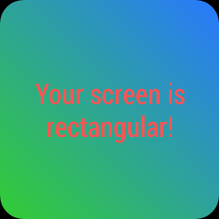
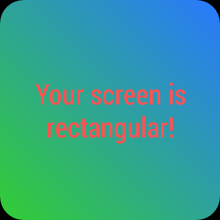
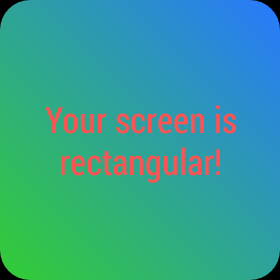

About: This sample demonstrates how to specify different layouts for round and rectangular screens. The layouts used in this sample are as follows:
How to run: Install the Wearable APK on the wearable, go to the voice menu (either by saying "OK Google" or tapping the home screen) and select the "Start..." option. Then, select "WatchViewStub Sample" from the submenu.
Wearable APIs used: WatchViewStub, DismissOverlayView
Screenshots:
